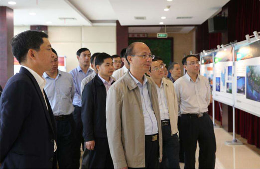

欢迎您， XX企业|个人中心

省直有关单位，长沙、株洲、湘潭市及省直管县市科技局、财政局，三市属地部属高校、科研院所、企业：
为深入实施我省创新引领、开放崛起战略，扎实推进长株潭国家自主创新示范区建设，根据示范区建设工作领导小组第二次会议部署和《长株潭国家自主创新示范区建设专项资金管理办法》、《关于做好2017年度湖南省科技创新计划项目申报工作的通知》（湘科发〔2017〕28号）要求，现就2017、2018年长株潭国家自主创新示范区专项项目组织工作有关事项通知如下：
一、专项组织原则
1、突出重点任务，集中力量办大事。根据省委、省政府自创区建设总体部署，围绕自创区建设三年行动计划目标，聚焦长沙·麓谷创新谷、株洲·中国动力谷和湘潭智造谷建设，集中力量支持一批对自创区建设有重要示范意义、亮点突出的标志性创新工程、标志性创新平台、标志性人才团队、标志性创新型产业集群，集聚政策、资金、人才推进产业链、创新链、资金链和人才链融合。
2、强化省市协同，落实“省统筹、市建设、区域协同、部门协作”总体要求。专项组织在示范区建设工作领导小组的统一部署下进行，省直相关单位、三市政府科技、财政管理部门、园区、企业、产业技术创新战略联盟等根据示范区试点示范要求做好基础性工作；省科技厅、省财政厅加强顶层设计，统筹资金使用，优化资源配置，加强项目实施引导；三市和相关单位承担项目建设主体责任。
3、创新管理方式，提高专项资金使用成效。专项资金使用遵循“省级统筹、市县建设、滚动规划、突出重点、绩效导向”的原则，实施省市共建，综合采取因素法和项目法相结合的分配方式，充分发挥财政资金投入的放大效应。市、园区加强财政资金配套，引导企业、社会加大创新投入，整合各类创新资源向自创区集聚。对实施成效明显的项目和改革试点特色突出的区域，给予奖励性补助。
4、优化组织流程，加强规划引导。坚持“规划、项目、资金”三位一体，优化项目资金管理流程。省科技厅编制项目实施总体方案，引导项目实施；三市科技管理部门和省直单位组织项目申报，编制专项实施三年滚动规划和年度实施方案；省科技厅会同省财政厅审核三年滚动规划、年度实施方案和省级重大标志性项目、重大基础条件建设项目以及落实省政府重点任务项目实施方案；上报示范区建设工作领导小组审定后按程序立项实施。省科技厅、省财政厅每年组织对项目组织实施情况开展绩效评价，根据评价结果动态调整三年滚动规划，提高实施成效。
二、专项组织原则
1、突出重点任务，集中力量办大事。根据省委、省政府自创区建设总体部署，围绕自创区建设三年行动计划目标，聚焦长沙·麓谷创新谷、株洲·中国动力谷和湘潭智造谷建设，集中力量支持一批对自创区建设有重要示范意义、亮点突出的标志性创新工程、标志性创新平台、标志性人才团队、标志性创新型产业集群，集聚政策、资金、人才推进产业链、创新链、资金链和人才链融合。
2、强化省市协同，落实“省统筹、市建设、区域协同、部门协作”总体要求。专项组织在示范区建设工作领导小组的统一部署下进行，省直相关单位、三市政府科技、财政管理部门、园区、企业、产业技术创新战略联盟等根据示范区试点示范要求做好基础性工作；省科技厅、省财政厅加强顶层设计，统筹资金使用，优化资源配置，加强项目实施引导；三市和相关单位承担项目建设主体责任。
3、创新管理方式，提高专项资金使用成效。专项资金使用遵循“省级统筹、市县建设、滚动规划、突出重点、绩效导向”的原则，实施省市共建，综合采取因素法和项目法相结合的分配方式，充分发挥财政资金投入的放大效应。市、园区加强财政资金配套，引导企业、社会加大创新投入，整合各类创新资源向自创区集聚。对实施成效明显的项目和改革试点特色突出的区域，给予奖励性补助。
4、优化组织流程，加强规划引导。坚持“规划、项目、资金”三位一体，优化项目资金管理流程。省科技厅编制项目实施总体方案，引导项目实施；三市科技管理部门和省直单位组织项目申报，编制专项实施三年滚动规划和年度实施方案；省科技厅会同省财政厅审核三年滚动规划、年度实施方案和省级重大标志性项目、重大基础条件建设项目以及落实省政府重点任务项目实施方案；上报示范区建设工作领导小组审定后按程序立项实施。省科技厅、省财政厅每年组织对项目组织实施情况开展绩效评价，根据评价结果动态调整三年滚动规划，提高实施成效。
合作方式：面议。
联系方式：中南大学科研部
电话：0731-88836342 88879272
E-mail：kjckfb@ csu.edu.cn